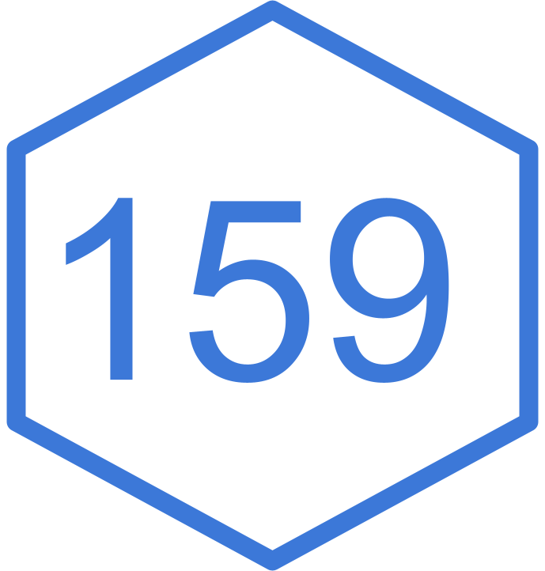

02:00
The Singularity Agenda
The Shift: Computation-based research is transitioning toward Frictionless Reproducibility (FR).
The Triad: FR driven by maturity of 3 data science principles:
The Superpower: Empirical Machine Learning (EML) uses this triad as an emergent superpower to drive AI progress.
The Export: These practices can be learned and adopted by any research field to instantly accelerate its rate of progress.
The Old Way (In-Principle Sharing)
The New Way (Frictionless Reproducibility)
The “Singularity”
When checking other people’s data work becomes effortless, scientific progress explodes at breakneck speed.
The Stalled Engine: Around 2005, individual computer chips stopped getting significantly faster year-over-year.
The Smartphone Boom: Because billions of people bought smartphones, tech companies built a massive global network of cloud servers to handle all that data.
The Result for Data Science: Today, any undergraduate student with a laptop can rent a supercomputer on the cloud for pennies to run massive datasets. Space and processing power are no longer bottlenecks.
The Core Triad:
Phase Transition: When all three legs of the triad meet, researchers can reproduce or modify an outside institution’s results within minutes or clicks.
The Meme Analogy
Why do internet memes spread across the globe in a single afternoon? Because there is zero friction to share them—you just click “forward.”
Viral Code: When data, code, and leaderboards are completely open, scientific ideas spread through a research community exactly like viral memes.
The “URL or I Don’t Care” Rule: Modern data analysts reject paywalls and broken links. If a research method doesn’t have an immediate, working link, the community ignores it and moves on.
Code as Gold: In the future, public code repositories will be treated as raw material.
Automated Tweaking: Data scientists will write automated scripts designed to crawl through thousands of past papers, pull down their code, and automatically swap parameters to find hidden improvements.
The Backwater Risk: Research fields that refuse to share their data and code due to privacy or copyright fears will be left behind and forgotten by the next generation.
If you publish this “dirty” code:
Do you elevate scientific transparency?
OR
Do you pollute the scientific record with amateur software engineering?
02:00
Going back to LeVeque’s “Theorems Without Proofs” analogy, publication of theorems without proofs is not acceptable. Yet, we accept computational outputs without the code that produce them.
Why does the scientific community tolerate this double standard?
02:00
It took me three years to write this algorithmic base. If I open-source it now, my competitors will use my code to publish five papers before I can even finish my next draft.
Publicly archiving your code with a timestamped DOI is the absolute best way to claim ownership, establish provenance, and legally force competitors to cite you.
If you are a funding agency, how do you balance a scientist’s valid right to profit from their multi-year software labor against the public’s right to verify the data pipeline immediately?
04:00
Many researchers hide their scripts because they are terrified that once the code is public, their inbox will be flooded with emails from strangers asking for technical troubleshooting, custom modifications, or software installation help.
How do you draw a boundary between providing necessary scientific transparency and protecting your personal time from being hijacked by outside users demanding free tech support?
03:00
